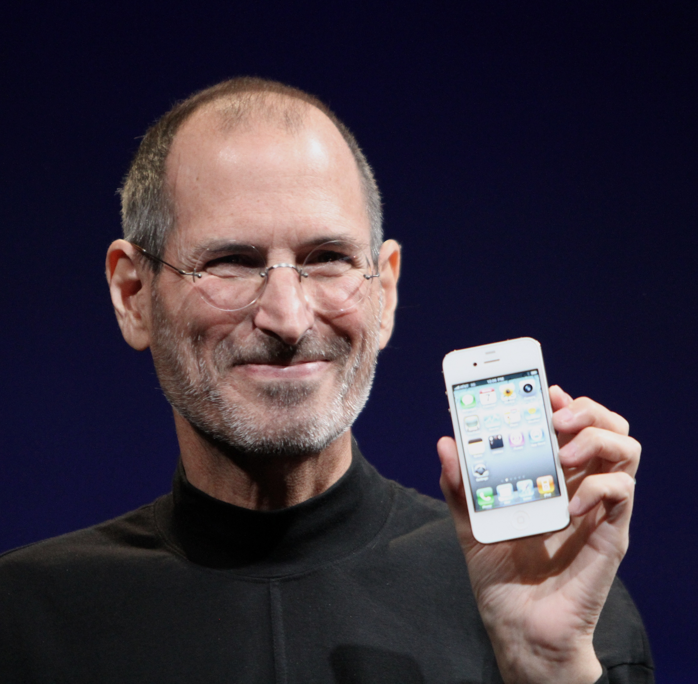

A Beginning
Steve Jobs was born in San Francisco, California, on February 24.
1955 — 2011
The man who believed that the people who are crazy enough to think they can change the world are the ones who do.
Discover his story ↓
Photograph by Matthew Yohe · Wikimedia Commons · CC BY-SA 3.0
01 / His Story
Steven Paul Jobs was born on February 24, 1955, in San Francisco, California. Adopted shortly after birth, he grew up in Mountain View, an area that would later become part of Silicon Valley. From an early age, he developed an interest in electronics and how things worked. His curiosity and willingness to experiment would become defining parts of his life.
In 1976, Jobs and his friend Steve Wozniak founded Apple Computer in a family garage. Their goal was to make computers more accessible to ordinary people. The introduction of the Apple II helped establish the company, while the Macintosh brought a new approach to personal computing through its graphical interface.
Jobs' journey was not without setbacks. In 1985, after disagreements within Apple, he left the company he had helped create. He went on to establish NeXT, a computer company, and became involved with Pixar, which grew into a major animation studio. His time away from Apple became an important chapter in his professional life.
In 1997, Jobs returned to Apple as the company faced serious challenges. His return marked the beginning of a remarkable period of innovation. Products such as the iMac, iPod, iPhone and iPad transformed their respective industries and influenced how people interact with technology. He died on October 5, 2011, but his influence continues to shape the world.
02 / The Journey
Steve Jobs was born in San Francisco, California, on February 24.
Jobs and Steve Wozniak founded Apple Computer, beginning their journey to make personal computers accessible to more people.
Apple introduced the Macintosh, helping bring graphical personal computing to a wider audience.
Jobs left Apple and later founded NeXT, while also becoming involved with Pixar.
Jobs returned to Apple, beginning a new era of products and innovation.
Apple introduced the iPod, changing how people carried and listened to music.
The first iPhone was introduced, combining a phone, music player and internet device.
Steve Jobs passed away on October 5, leaving behind a lasting influence on technology and design.
03 / Words to Remember
"Stay hungry. Stay foolish."
— Steve Jobs, Stanford University Commencement Address, 2005
04 / The Legacy
Steve Jobs' influence extended beyond the products he helped create. His work brought together technology, design and creativity in ways that changed entire industries.
Helping make computers more approachable and accessible.
Changing how people purchased, carried and listened to music.
Influencing the design and possibilities of modern smartphones.